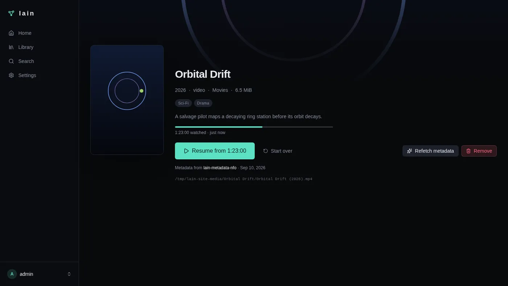
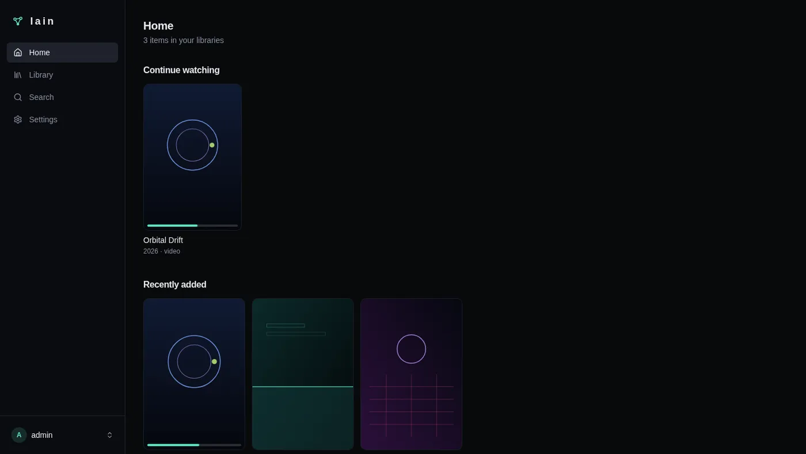
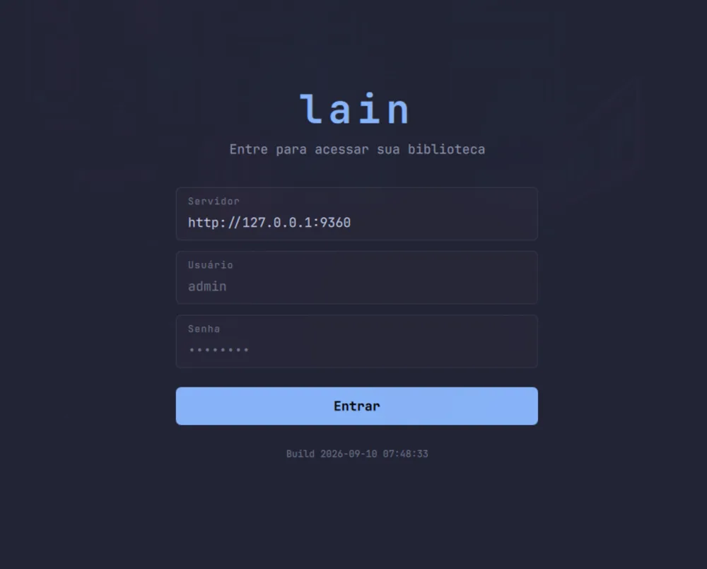

Your data. Your machine. Your rules. Your plugins.
A single static binary in Go. A tiny trusted core hosts replaceable
plugins — catalog, playback, search, metadata, thumbnails — and your
library streams to the embedded web UI, to mpv and to the
native desktop client.
$ lain serve --port 9360
lain v0.1.0 on http://127.0.0.1:9360
data ~/.local/share/lain
web ui embedded · 3 plugins healthy
GET /api/catalog?limit=24 200 12ms
GET /api/items/8eb6…/thumbnail 200 84ms
01No cloud. No account. No telemetry.
02Your files stay yours, on your disk.
03Every subsystem is a replaceable plugin.
04Nothing optional is hardcoded.
01 / core
Everything beyond the core is a plugin.
Bound to capability names, health-checked, swappable at runtime with generation fencing. The server stays useful even with pieces missing.
01
Capability registry
Capabilities resolve through a composition: exactly-one,
ordered-many, first-accepted,
merge-many. Swaps are fenced by generation, so a stale
writer can never overwrite newer state; a provider that fails at call time falls
back to the last-good one, once.
Media bytes never cross a plugin call. The gateway authorizes, resolves
identity and serves the file over HTTP Range, from the same process as the
API and the web UI.
206 Partial Contentmatroska · hevc
03
Thumbnails
ffmpeg extracts one frame, the provider caches it on disk keyed by source
mtime and size, and the gateway streams it. No ffmpeg installed? Only this
capability degrades, and it says so.
GET /api/items/<id>/thumbnail?t=8&w=480 200 image/jpeg cached · 84ms
04
Metadata
Local NFO sidecars plus remote providers merge by title match and
precedence, scored and cached. Overlays decorate the catalog without
touching identity, files or progress.
NFOKitsuAniListJikanmerge-many → best pick
05
Progress
User state lives outside the catalog, so reindexing never loses a resume
point. Writes are bounded — pause, seek, every ten seconds, on exit — never
on every video event.

fig. 05 — resume state in the embedded UI
06
Surfaces
The Svelte 5 SPA is compiled into the Go binary — same process, same
origin, no Node at runtime. The CLI drives mpv with an authenticated stream
URL. The desktop client speaks the same API.

fig. 06 — the embedded web UI, no separate server
web · embedded SPAcli · lain watch --nextdesktop · qt6 + libmpv
02 / pipeline
Enumerate. Identify. Catalog. Plan. Stream.
A policy-free ingest pipeline wired from plugins you can replace one by one. Unidentified files count, they never abort a scan.
“With no transcoder installed, the planner says transcode-required instead of faking a stream it cannot produce.”
degrade honestly · never silently
03 / install
Running in under a minute.
No toolchain, no Node, no database to provision. Pick the shape that fits your machine.
docker
→ open http://127.0.0.1:9360 · or let the installer generate the compose file
→ static, no cgo · releases carry .sha256 sidecars and build attestations
→ choose components, media paths, port; generates docker-compose.yml
04 / desktop
A native client, not a browser tab.
Qt 6 Quick/QML on libmpv. Direct play for everything the server can serve, resume from saved position, audio and subtitle tracks, server-side thumbnails and in-app metadata enrichment.

fig. 07 — the native client: first-run setup against your server
qt6
Quick/QML interface that follows your desktop palette live
libmpv
direct playback, shaders, tracks, bounded progress writes